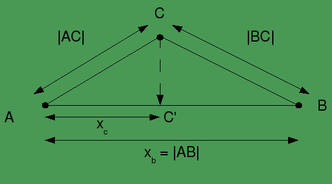
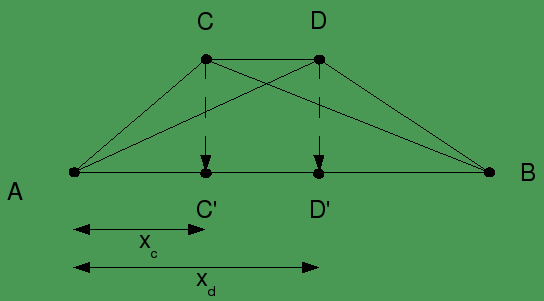
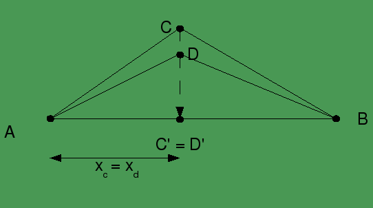
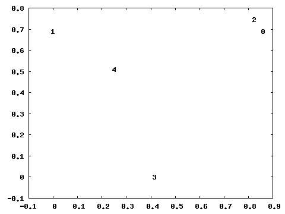

all code for this experiment available from github.com/matpalm/resemblance
a variation of the jaccard coefficient (considered in my last experiment) is the jaccard distance. rather than returning a coefficient from 0 (different) to 1 (the same) it returns a "distance" where similiar items are "close" together.
for two sets A and B if X is the cardinality (ie number of elements) of the xor of A and B (X = | A ^ B |) and U is the cardinality of the union of A and B (U = | A ∪ B |) then the jaccard distance is X / X + U
eg considering some sample data items
code> cat test.data
0 - richard's favorite flavour of softdrink is peanut butter and jam 1 - nowadays the best band in the world is bad religion 2 - richard's favorite softdrink flavor is peanut butter and jelly 3 - this sentence has nothing, i mean nothing, to do with the others 4 - i used to think slayer was the best band in the world
we can apply shingling to calculate the pairwise jaccard distances
code> cat test.data | shingle.rb distance 0 > distances.jaccard
| 0 | 1 | 2 | 3 | 4 | |
| 0 | 0.00 | 0.86 | 0.17 | 0.83 | 0.79 |
| 1 | 0.86 | 0.00 | 0.84 | 0.82 | 0.56 |
| 2 | 0.17 | 0.84 | 0.00 | 0.85 | 0.78 |
| 3 | 0.83 | 0.82 | 0.85 | 0.00 | 0.72 |
| 4 | 0.79 | 0.56 | 0.78 | 0.72 | 0.00 |
the most similiar pair with a distance of 0.17 is 0 - richard's favorite flavour of softdrink is peanut butter and jam 2 - richard's favorite softdrink flavor is peanut butter and jelly
the next most similiar pair with a distance of 0.56 is 1 - nowadays the best band in the world is bad religion 4 - i used to think slayer was the best band in the world
and everything else is roughly equal.
but how can we visualise the entire set? pairwise distances can be used to determine points whose spacing corresponds to these distances. as close as possible, that is, as the dimensionality allows... eg. by picking points in a billion-dimensional space we'd always be able to position them exactly at the jaccard distances. (by basically make all the relationships orthogonal) but in a "smaller" space, say 2-dimensions, we might not be able to find exact points but will have to be content with minimising the error.
side note: can these individual distances be used to visualise the data as a whole? yes! since the jaccard distance calculation honours the the triangle inequality (if the triangle equality didnt hold then A close to be B and B close to C wouldn't imply A close to C and we need this transistive property) more on this in a bit.
given these distances can we decide on 5 points in n-dimensional space for visualising this data?
one hacky approach for deciding on points given distances is multi dimensional scaling ( i used it in a previous experiment to go from a 1000 dimensional tag space to a 2 or 3 dimensional space ) we could allocate random points in the n-dimensional space and "scale" them till the error of their distances was minimised. but it's doesn't quite feel right....
so i posted the question to stackoverflow and got a great paper on a technique called fastmap that i'm going to just basically implement and discuss here.
fastmap is a cool little algorithm for calculating points given only the distances between the points. it works in n-dimensional space but starts by determining the best points for 1 dimension (aka a line) and generalises.
we'll imagine this line is the x-axis and start by deciding which points will define the ends of the line. we do this by choosing the two points that are furthest apart from each other. to guarantee the furthest apart we would have to compare each point to each other ( (n2 - n)/2 comparisons, ie O(n2) ) but it's turns out we don't have to use the absolutely furthest ones apart and we can find a pair using a simple O(2n) heuristic.
to determine end points A and B it's simply...
if we define |AB| to be the distance from A to B and let A be the origin, ie xa=0, and then B be along the x-axis at the point xb=|AB| we can project all other points onto the x-axis so that they lie (roughly) between these two eg for point C we project to C' which lies somewhere such that 0 <= xc <= |AB| (this will work for all A,B,C thanks to the triangle inequality property of the jaccard distance)
this projection is calculated using our old mate pythagoras xc = ( |AC|2 + |AB|2 - |BC|2 ) / 2 |AB| 
after projecting all points we'll have a 1 dimenionsal representation which preserves distances as much as possible
for our working example we end up with...
code> cat distances.jaccard | fastmap.rb 1 > points.1d
| id | x coord | record |
| 1 | 0.00 | nowadays the best band in the world is bad religion |
| 4 | 0.25 | i used to think slayer was the best band in the world |
| 3 | 0.41 | this sentence has nothing, i mean nothing, to do with the others |
| 2 | 0.82 | richard's favorite softdrink flavor is peanut butter and jelly |
| 0 | 0.86 | richard's favorite flavour of softdrink is peanut butter and jam |
how accurate is the projection? we can convert back to pairwise distances and check the mean square error
code> cat points.1d | convert_points_to_distances.rb > distances.projected.1d code> mean_sqr_err.rb distances.jaccard distances.projected.1d
for this 1d projection the error is 0.10, which is pretty accurate. (it's equivalent of an error of 1.0 in only one of the distances for a set of 10 pairwise distances)
how do we now generalise to map into another dimension? what we want to do is project the distances now into an orthogonal dimension, let's say a y-axis how do we adjust our pairwise distances to take into account the projections we just did? let's consider some cases... we define ||AB|| as the adjusted pairwise distance.
consider if during our projection we projected C to C' and D to D' and that after the projection |CD| = |C'D'|, ie |CD| = xd - xc  in this case the projection has described the distance required exactly. for the purpose of the next projection we want ||CD|| = 0 (ie nothing more to do). (the line CD must be parallel to AB)
alternatively consider that if during our projection we projected C to C' and D to D' and that after the projection |C'D'| = 0 ie xc = xd  in this case the projection hasn't captured any of the actual distance between C and D. for the purpose of the next projection we want ||CD|| = |CD| (the line CD must be orthogonal to AB)
so the general form of converting the distances, which includes the parallel and orthogonal cases, is ||CD||2 = |CD|2 - |C'D'|2
after this adjustment we can just perform the same projection steps and obtain values for a second dimension.
projecting our data twice (ie into 2 dimensions) we get
code> cat distances.jaccard | fastmap.rb 2 > points.2d
| id | x coord | y coord | record |
| 0 | 0.86 | 0.69 | richard's favorite flavour of softdrink is peanut butter and jam |
| 1 | 0.00 | 0.69 | nowadays the best band in the world is bad religion |
| 2 | 0.82 | 0.74 | richard's favorite softdrink flavor is peanut butter and jelly |
| 3 | 0.41 | 0.00 | this sentence has nothing, i mean nothing, to do with the others |
| 4 | 0.25 | 0.51 | i used to think slayer was the best band in the world |

for this 2d projection we have reduced the error to 0.01 a huge improvement from the 0.1 error of the 1 dimensional case. we can now easily see the most similiar items 0 and 2 are closest with the next most similiar items 1 and 4 in the same rough area
projecting our data thrice (ie into 3 dimensions) we get
code> cat distances.jaccard | fastmap.rb 3 > points.3d
| id | x coord | y coord | z coord | record |
| 0 | 0.86 | 0.69 | 0.44 | richard's favorite flavour of softdrink is peanut butter and jam |
| 1 | 0.00 | 0.69 | 0.44 | nowadays the best band in the world is bad religion |
| 2 | 0.82 | 0.74 | 0.48 | richard's favorite softdrink flavor is peanut butter and jelly |
| 3 | 0.41 | 0.00 | 0.48 | this sentence has nothing, i mean nothing, to do with the others |
| 4 | 0.25 | 0.51 | 0.00 | i used to think slayer was the best band in the world |
gnuplot animation generated with bash> ruby plot.3d.rb > plot.3d.gp bash> gnuplot plot.3d.gp bash> mencoder mf://*png -o plot.3d.avi -ovc lavc
again we reduce our error, now down to 0.001
finally, without the explicit numbers, if we project one more time into 3 dimensions we reduce our mean square error to 0. with only 5 points this would always be possible since in general we can always project n+1 points into n dimensions without a formal proof it seems to make sense; 2 points onto a line, 3 points of a triangle onto a plane, etc
next, avoiding O(n2) with the simhash algorithm
june 2009 me on twitter me on google+